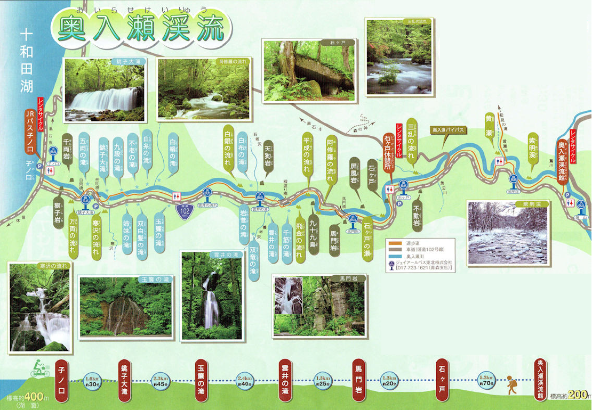

大自然之旅
奧入瀨溪流是一條全長約14公里的溪流，位於青森縣十和田市，屬於十和田八幡平國立公園。 沿著溪流走，途中會看到許多瀑布景點，匯集了各種瀑布及水流，故又被稱為「瀑布街道」，因此吸引了眾多觀光客及喜好大自然攝影的人。 奧入瀨溪流是日本絕佳的賞楓景點之一，且被指定為國家特別名勝與天然紀念物，是日本名景勝地的代表之一。  這是奧入瀨溪流的景點地圖，由"子之口"到"十和田湖"，詳盡顯示了各個瀑布的地點及名稱。